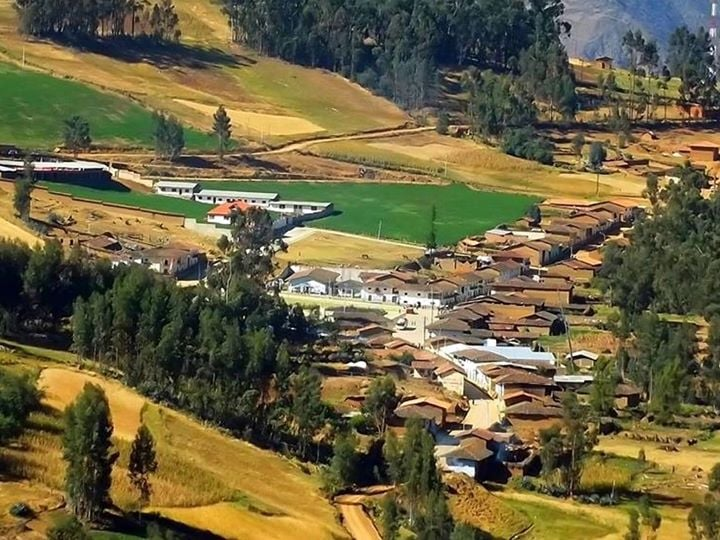
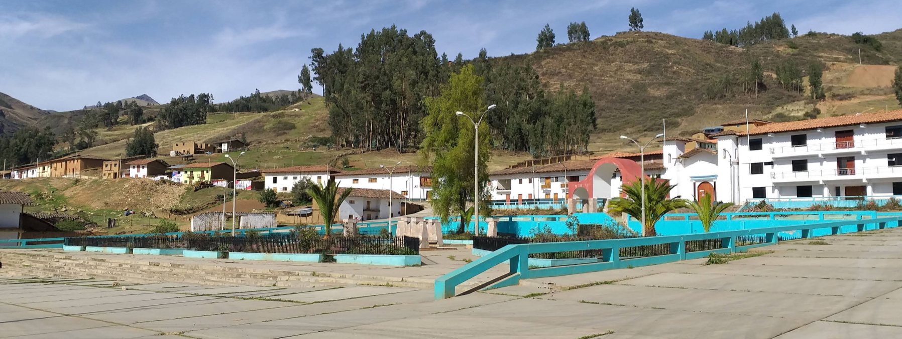

Nuestros orígenes
Historia Viva
Mollebamba, que en quechua significa "Llanura del Molle", fue fundado el 3 de agosto de 1920. Antiguo paso del Camino Inca, este territorio fue testigo de un hecho histórico trascendental: el asesinato del inca Huáscar, que marcó el fin de la guerra civil incaica y allanó el camino a la conquista española.
Hoy, el distrito es un referente de identidad cultural en la provincia de Santiago de Chuco, Departamento de La Libertad. Sus terrazas andinas, caminos ancestrales y restos arqueológicos son testimonio vivo de un glorioso pasado que sus habitantes preservan con orgullo.
Antiguo paso del Qhapaq Ñan (Camino Inca), Mollebamba conectaba los grandes centros administrativos del Tahuantinsuyo con la costa norte del Perú.


Fe y cultura
Tradiciones que perduran
La festividad de la Virgen del Carmen y el Señor de la Misericordia son las más representativas. El pueblo se llena de danzantes, bandas de músicos, castillos y la tradicional "corte de pelo" al mayordomo, un acto profundo de gratitud y fe.
Arte en movimiento
Danzas Típicas
Cada danza cuenta una historia. Máscaras, colores y ritmos que mantienen vivo el alma andina de nuestro pueblo.
Sabores ancestrales
Sabores de Mollebamba
Recetas transmitidas de generación en generación, elaboradas con ingredientes propios de los Andes de La Libertad.
Imágenes
Galería de Mollebamba
Una mirada a nuestros paisajes, festividades y vida cotidiana. Haz clic en cualquier imagen para verla en detalle.
Planifica tu visita
Clima
15°C
Templado y seco la mayor parte del año.
Temperatura promedio entre 12°C y 22°C.
Mejor época para visitar: Abril a Noviembre
Temporada de lluvias: Diciembre a Marzo
Lleva
abrigo para
las noches
andinas
Planificación
Calendario de Festividades
Todo el año hay motivos para celebrar. Conoce cuándo visitar Mollebamba y sé parte de nuestras tradiciones.
Llega a nosotros
¿Cómo llegar?
Aprox. 4 horas por carretera afirmada hasta el distrito.
1.5 horas en auto por vía afirmada. Ruta paisajística.
Aproximadamente 3,200 m.s.n.m. Se recomienda aclimatación previa.
Gestión municipal
Autoridades y Contacto
Alcalde del Distrito
Oscar Paredes Narváez
Oficina de Turismo
Mollebamba Tourist Info
Hecho a mano
Artesanías Locales
El talento de los artesanos de Mollebamba plasmado en objetos únicos que puedes llevar como recuerdo.
Multimedia
Vive Mollebamba en Video
Próximamente, el documental que muestra la esencia de nuestras costumbres y paisajes andinos.
Tradición oral
Leyendas de Mollebamba
El Duende de la Acequia
Cuentan los abuelos que al atardecer, un duende pequeño con sombrero de paja protege las acequias ancestrales. Si le ofreces un puñado de maíz blanco, te guiará hacia una veta de agua escondida entre las rocas. Nunca le grites, porque desaparece con las cosechas y deja el campo seco hasta la próxima luna llena.
Visitantes
Lo que dicen de nosotros
Antes de venir
Datos prácticos para el viajero
"Casa de la Abuela" — contacto: +51 987 654 321
Protector solar, abrigo para la noche, botas y ropa impermeable en temporada de lluvias.
Policía: 105 · Puesto de Salud Mollebamba: (044) 123-111
Señal de celular disponible en el centro del distrito. Movistar y Claro.
Planifica tu viaje
Destinos y Transporte
Encuentra los principales atractivos de Mollebamba y contacta directamente con los servicios de transporte disponibles.
Escríbenos
¿Quieres visitarnos?
Estamos aquí para ayudarte a planificar la mejor visita a Mollebamba. Ya sea para conocer nuestras festividades, paisajes o contratar servicios turísticos, con gusto te orientamos.